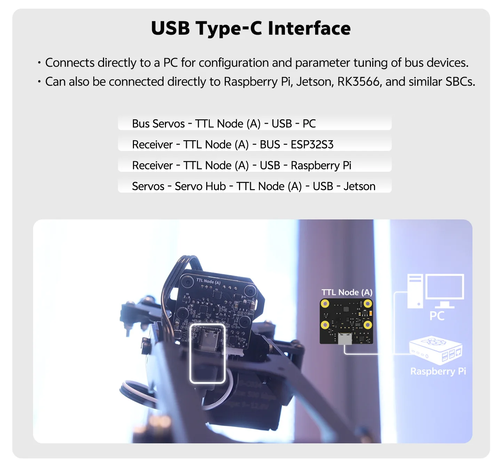

直接读取 S.BUS 遥控器信号
资料明确写明可通过 2.54mm-3P 接口为 5V 航模接收器供电并通信，读取 S.BUS 通道数据，适合把遥控器输入接到总线系统里。
TTL bus node board
把 USB Type-C 调参、S.BUS 遥控输入、双路 PWM 可调电源输出、双 RGB 状态灯和 TTL 总线扩展整合到一块紧凑板卡里，适合给总线舵机、机械臂末端、移动机器人和自定义节点做统一接入。


核心能力
现有资料显示，TTL Node (A) 不是单纯的转接板，而是把总线通信、遥控器输入、状态灯、可调供电和上位机调参入口放到一起，方便在机械臂、底盘和实验设备中作为末端节点或扩展节点使用。
资料明确写明可通过 2.54mm-3P 接口为 5V 航模接收器供电并通信，读取 S.BUS 通道数据，适合把遥控器输入接到总线系统里。
可直接连接 PC、树莓派、Jetson 等带 USB 接口的设备，用于图形化调参、读取状态或通过程序控制节点板与总线设备。
板载两路 PWM 输出可调节 01 与 02 电源输出口电压，文档示例用 0 到 1000 的数值进行控制，便于辅助供电与联动控制。
板上提供两路 RGB 灯，资料给出了 FD 软件测试方法和 Arduino 例程，适合做状态反馈、调试提示和运行可视化。
出厂默认 ID 为 0，文档说明可设置范围为 0 到 253。多个 TTL Node (A) 与总线舵机可共线使用，但需要先避免 ID 冲突。
现有资料提供 FD 调试软件、C++ / Python 控制方式和基于 Robot Driver with ESP32S3 Lite 的 Arduino 例程，适合继续接入现有总线项目。

接口接入
中文使用文档把 TTL Node (A) 的接入方式分成三类：直接通过 USB 连接上位机、通过 TTL Adapter (A) 加入总线、以及接入 Robot Driver with ESP32S3 Lite 由嵌入式程序控制。不同接法的用途和供电边界都已经写明。
总线集成
现有详情素材和使用文档都在强调 TTL Node (A) 的位置不是“额外配件”，而是一个总线系统里的功能节点。它能把接收器输入、状态灯、辅助供电和调参入口集中到机械臂或机器人上，减少额外走线。

应用场景
现有场景素材主要围绕机械臂和移动底盘：一类是把节点板放在机械臂末端读取接收器信号、控制指示灯和供电口；另一类是放在总线系统里，通过 PC、树莓派或 ESP32S3 统一管理。页面只保留资料里已经出现过的场景，不把它包装成无边界的通用控制器。


资料支持
对需要快速上手的人来说，TTL Node (A) 的优势不只在板卡本身。现有资料已经给出中文使用文档、FD 软件接入说明、库与示例压缩包，以及围绕 ESP32S3 Lite 的 Arduino 演示代码。
技术参数
| 产品型号 | TTL Node (A) |
|---|---|
| 产品类型 | 多功能 TTL 总线节点板 |
| 板卡尺寸 | 30 × 35 mm（详情物料标注） |
| 默认总线 ID | 0 |
| ID 设置范围 | 0~253 |
| 默认波特率 | 1 Mbps |
| 可选波特率参数 | 1000000 / 500000 / 250000 / 128000 / 115200 / 76800 / 57600 / 38400 |
| 外部供电电压 | 9~12.6V |
| 接收器供电 | 5V，文档标注电流不大于 500mA |
| 通信与调参入口 | USB Type-C，支持 PC、树莓派、Jetson 等上位机接入 |
| 总线接口说明 | HX-5264-3P 与 PH2.0-3P 可用于供电和通信；GH1.25-3P 仅用于信号传输 |
| S.BUS 接入 | 支持通过 2.54mm-3P 接口读取航模接收器信号 |
| PWM 输出 | 2 路可调电源输出，文档示例控制值范围为 0~1000 |
| RGB 指示 | 2 路 RGB 状态灯，单色通道示例值范围为 0~7 |
| 电压检测 | ADC 输入通道 1 用于检测总线电压 |
| 开发支持 | FD 软件、库与例程、Arduino / ESP32S3 Lite 示例 |
包装清单
包装清单图片已明确列出板卡与三根线材，便于后续在商品页、发货清单或售后文档中保持一致。若后续用户调整线材规格，应以实际发货版本为准。
TTL Node (A) 多功能 TTL 总线节点板
GH1.25-3P 公头线，黑色硅胶线，300mm
5264-3P 转 PH2.0-3P 总线线，黑色，250mm
USB-A 转 USB-C 数据线，1m

下一步
如果你当前只是要把节点板加入已有舵机总线，建议先单独连接一个设备完成 ID 修改，再与舵机或其它 TTL Node (A) 共线接入，避免默认 ID 冲突。Wiki 地址仍保留占位，待用户补充正式链接。